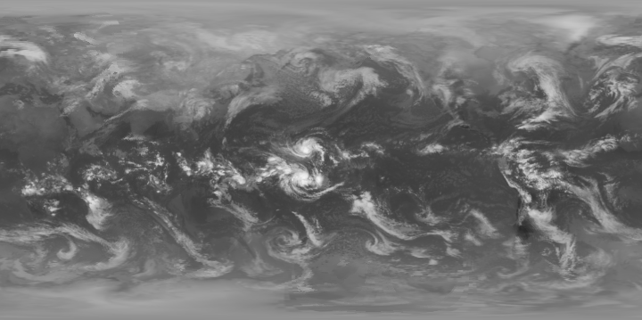
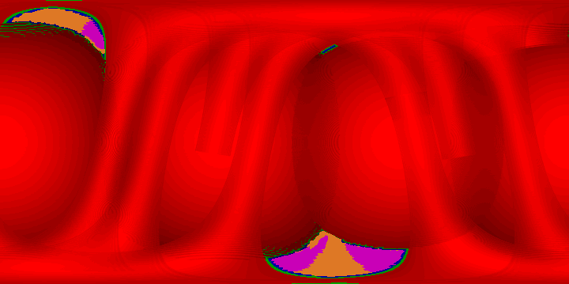
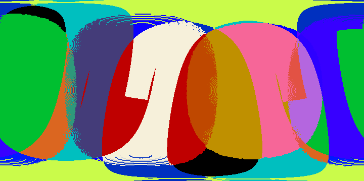

The following images are a sample of the data present in the CLAUS Archive. Each image is shown at 50% of its full size: to view at full size open the image in a new window.
Plate Caree projection (uniform latitude-longitude grid), with the Greenwich Meridian at the left and right edges. Temperatures are shown using an inverted linear scale, with darkest grey value = 1 representing 340K, through to brightest grey value = 255 representing 170K. (NB: grey value = 0 represents missing, i.e. uninterpolatable, data).

This image was created by adding a 15% transparency red/blue coloured land/sea mask to the above image. A reduced resolution (1 degree) QuickTime animation of the data for January 1992 may be viewed by clicking on this image or here.
This image represents semi-quantitatively the level and nature of the processing applied to the source ISCCP B3 data to produce the basic BT image shown above. The hues represent the level of interpolation applied (red=primary spatial, green=secondary spatial, blue=tertiary spatial, orange=primary temporal and magenta=secondary temporal).. The brightness of the spatially interpolated values represents the nominal off-nadir viewing angle (bright=0š, through to dark ~81š). (Refer to the User Guide for detailed explanation). The data from geostationary satellites thus exhibits a spherical appearance, whilst the data from polar orbiters reveals a tubular nature.

This image represents the satellites used in the interpolation process. Up to eight satellites are encoded into each byte value. Displaying the data using a colour lookup table reveals the overlap pattern for each BT image. (Refer to the User Guide for detailed explanation).
